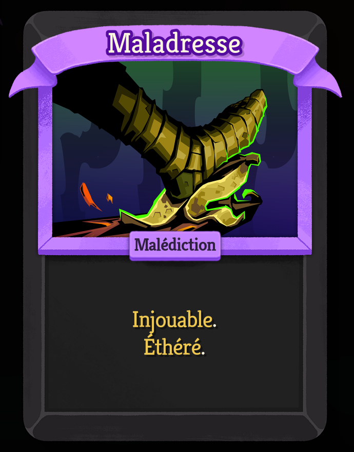
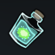
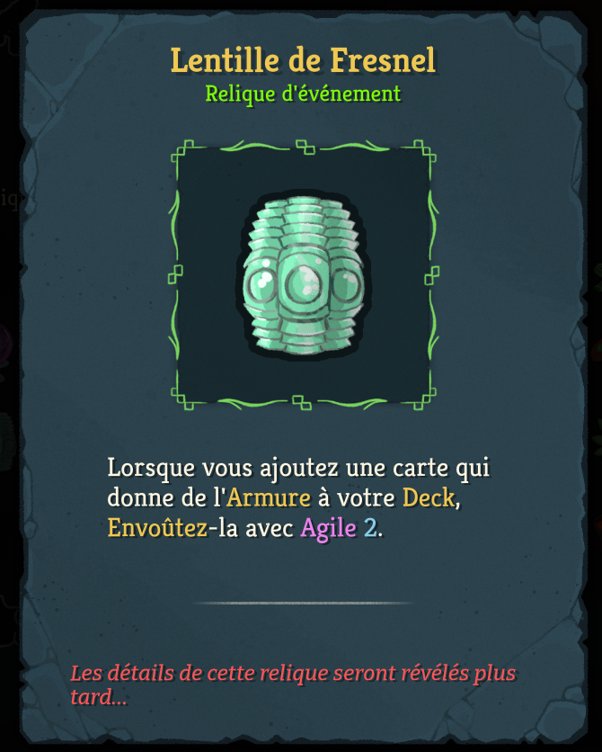
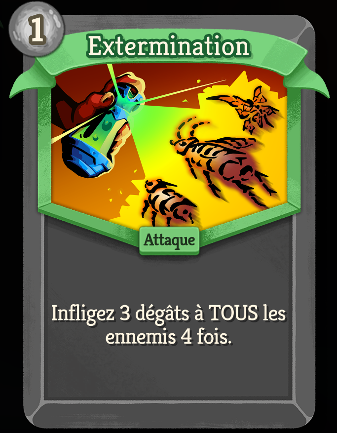
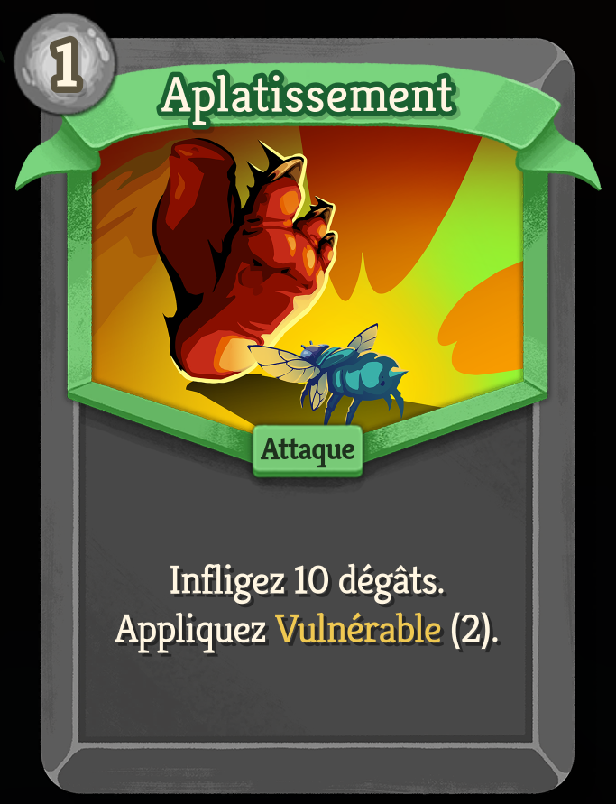
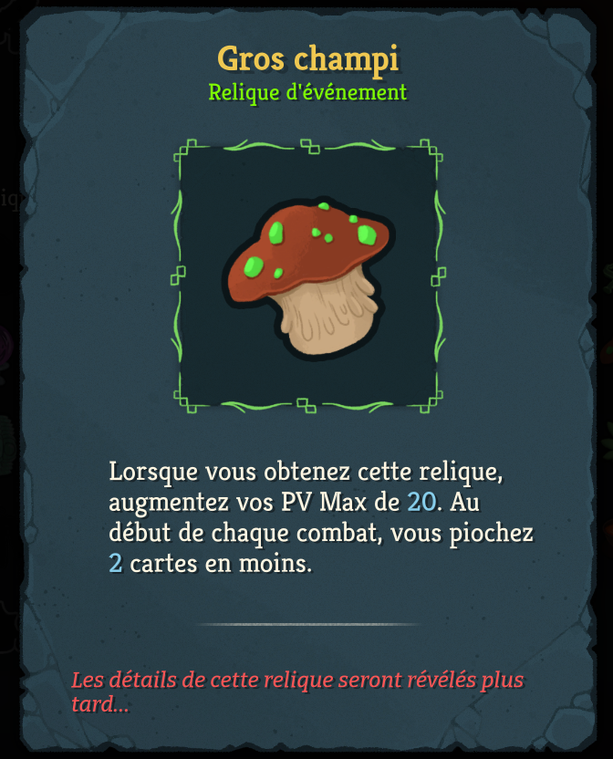
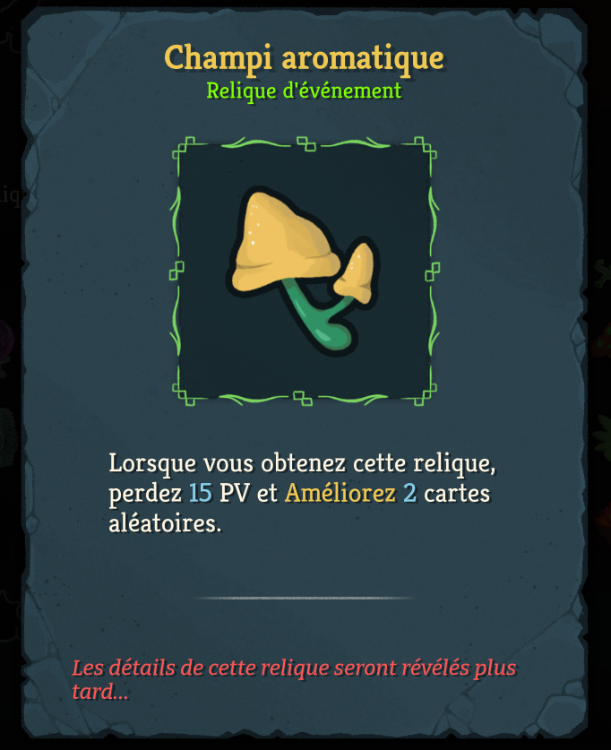

Les évênements aléatoires
lors d'une partie certaines cases contiennent un évênement aléatoire.
Ces évênements ont des éfaits variant de l'ajout de cartes dans son deck à gagner des reliques en passant par des quêtes
Voici quelques exemples
Ceci ou cela ?
Cette évênement peut se produire dans tous les actes du jeu
texte de l'évênement
Des bras jaillissent soudainement d’un trou dans le sol, tenant d’une part un un sac suspect rempli de richesses et d’autre part une relique clairement maudite.
« Ceci... ou Cela ? »
chuchote une voix rauque d’en-dessous.
Choix 1
Cela
Ajoutez Maladresse à votre Deck. Obtenez une Relique aléatoire.

Choix 2
Ceci
Perdez 6 PV. Recevez 41-69 Pièces d’or.
Balise engloutie
Cette évênement peut se produire dans les bas-quais de l'acte 1
texte de l'évênement
Après avoir traversé un paysage onirique d’eaux calmes et de rochers, vous émergez face à un phare en train de s'enfoncer dans la boue et qui émet une lueur d'anti-lumière.
Vous pouvez mettre en bouteille un peu du liquide faiblement luminescent qui s’est accumulé ici, ou bien vous pouvez tenter d’atteindre le sommet du phare afin d’en récupérer la lentille.
Choix 1
Mettre en bouteille
Récupérez Potion luminescente.

Choix 2
Gravir le phare
Obtenez Lentille de Fresnel. Perdez 13 PV Max.

Tas de déchets
Cette évênement peut se produire dans les bas-quais de l'acte 1
texte de l'évênement
Vous découvrez un gigantesque tas d’armes et de breloques abandonnées, ainsi que toutes sortes de babioles insolites. Le tas paraît vibrer et se mouvoir, comme s’il grandissait de l’intérieur...
Si vous cherchez en surface, vous trouverez sans doute des objets de valeur. Mais si vous fouillez plus en profondeur, vous pourriez trouver des trésors exotiques.
Choix 1
Fouiller au fond
Perdez 8 PV. Obtenez une Relique du passé aléatoire.
Choix 2
Ramasser de la camelote
Récupérez 100 Pièces d’or. Obtenez une carte aléatoire du passé .
Sangsue cérébrale
Cette évênement peut se produire dans l'acte 1 ou l'acte 2
texte de l'évênement
*poum*
Vous ressentez une douleur aiguë sur le dessus du crâne tandis qu’une pensée poignarde votre esprit.
« PARTAGER CONNAISSANCE ??? »
Vous hésitez sur la marche à suivre...
Choix 1
Arracher la sangsue
Perdez 5 PV. Recevez une récompense de carte Incolore.
Choix 2
Partager la connaissance
Choisissez 1 parmi 5 cartes aléatoires à ajouter à votre Deck.
Tueur d’insectes
Cette évênement peut se produire dans l'acte 2
texte de l'évênement
Alors que vous affrontez un essaim d’insectes agressifs, vous remarquez soudain qu’un Puissant Guerrier à l’allure rude combattait à vous côtés depuis le début !
Sentant venir la défaite, les insectes s’éparpillent. Vous vous tournez vers votre nouveau compagnon.
« Veux-tu quelques conseils pour exterminer ces nuisibles ? »
Quelle courtoisie. Vous acceptez son offre d’un hochement de la tête.
Choix 1
Apprendre la Technique d’Extermination
Ajoutez Extermination à votre Deck.

Choix 2
Apprendre la Technique d’Aplatissement
Ajoutez Aplatissement à votre Deck.

Automate infesté
Cette évênement peut se produire dans l'acte 2
texte de l'évênement
Vous arrivez dans une salle remplie de robots morts.
Un seul automate paraît encore en service, mais son cœur faiblement lumineux est englouti par une excroissance organique grotesque, et il ne réagit plus.
Choix 1
Étudier
Obtenez un Pouvoir aléatoire.
Choix 2
Toucher le cœur
Obtenez une carte de coût 0 aléatoire.
Affamé de champignons
Cette évênement peut se produire dans l'acte 3
texte de l'évênement
Depuis combien de temps n’avez-vous rien mangé ?
... attends, d’où vient cette odeur incroyable ?
Vous suivez l’odeur et arrivez dans un campement accueillant où cuisent toutes sortes de champignons appétissants ! Vous avez si faim que vous ne vous préoccupez pas de leur innocuité.
(Si faim que vous ne remarquez même pas l’aventurier mort qui gît à terre.)
Choix 1
Gros champignon
Obtenez Gros champignon.
Lorsque vous obtenez cette relique, augmentez vos PV Max de 20. Au début de chaque combat, vous piochez 2 cartes en moins.

Choix 2
Champignon aromatique
Obtenez Champignon aromatique.
Lorsque vous obtenez cette relique, perdez 15 PV et Améliorez 3 cartes aléatoires.
